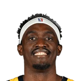
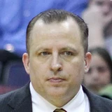
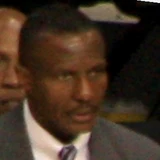
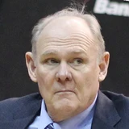

Ujiri on the decision to pivot, trade Anunoby/Siakam and go younger:
“The uncertainty of free agency was a big factor. We also looked at the trend of the team. We tried to give it as much time as we can.”

Every quote from Masai Ujiri about OG Anunoby in the archive, newest first. Each one links to its original source.
Ujiri on the decision to pivot, trade Anunoby/Siakam and go younger:
“The uncertainty of free agency was a big factor. We also looked at the trend of the team. We tried to give it as much time as we can.”
“There are going to be growing pains, trust me, you know like, sometimes it's gonna be tough to watch but we know what's coming,we know we're excited about the young talent. They are excited to play - to see how, OG [Anunoby], Pascal [Siakam], Fred, are going to evolve as leaders - as elite players. And then the young guys, [Scottie] Barnes, Malachi [Flynn], Dalano [Banton]. In sports, people think 'now,' you know? And this is where we have to be patient and let it grow.”

Masai Ujiri on Pascal Siakam8 quotes
Tom Thibodeau on OG Anunoby6 quotes
Masai Ujiri on Dwane Casey5 quotes
Masai Ujiri on George Karl3 quotes